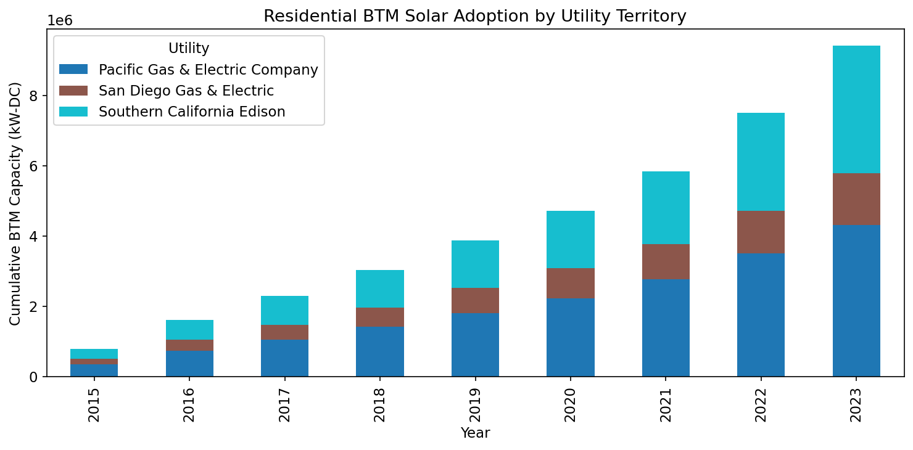
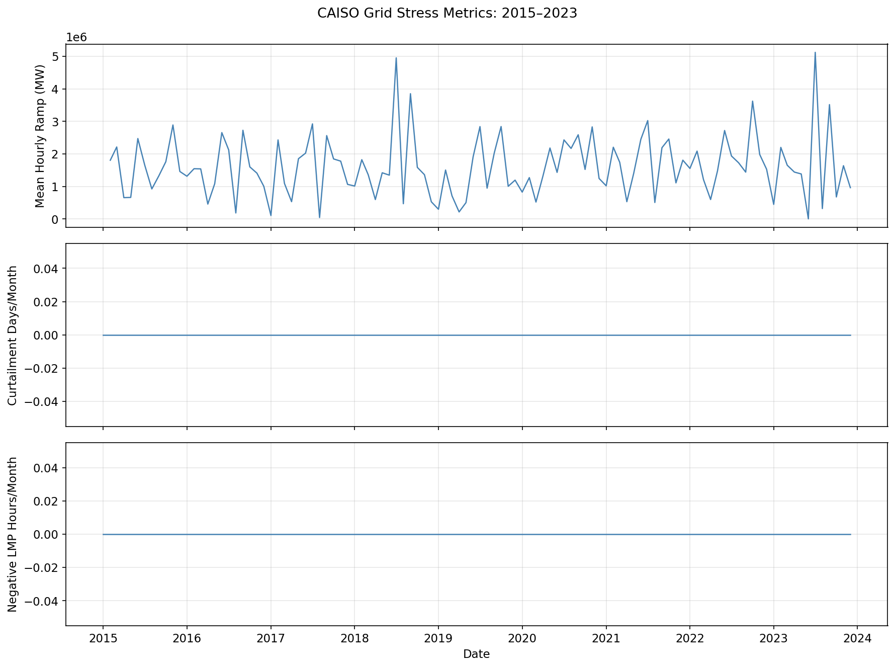
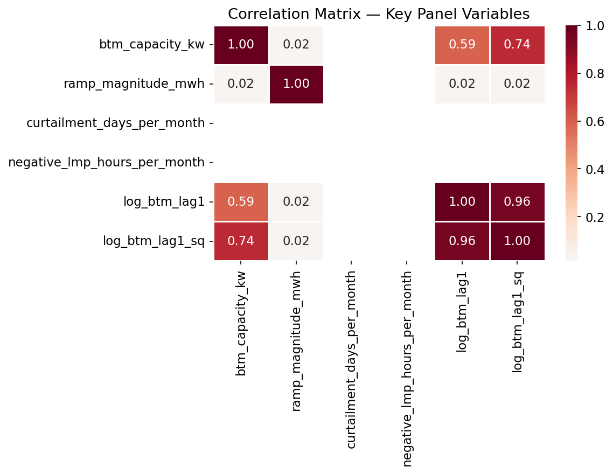
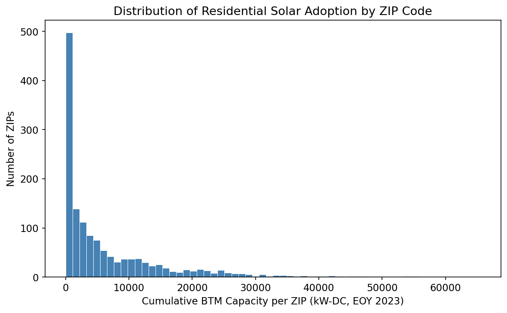

3. 05 · Exploratory Data Analysis#
Summary statistics, adoption trajectories, and grid-stress trends.
import sys
from pathlib import Path
ROOT = Path().resolve().parent
sys.path.insert(0, str(ROOT / 'src'))
PROC = ROOT / 'data' / 'processed'
FIGS = ROOT / 'output' / 'figures'
FIGS.mkdir(parents=True, exist_ok=True)
import pandas as pd
import numpy as np
import matplotlib.pyplot as plt
import seaborn as sns
plt.rcParams.update({'figure.dpi': 150, 'font.size': 11})
panel = pd.read_parquet(PROC / 'panel_for_regression.parquet')
3.1. 5.1 Summary Statistics#
key_vars = ['btm_capacity_kw', 'ramp_magnitude_mwh', 'curtailment_days_per_month', 'negative_lmp_hours_per_month']
panel[key_vars].describe().T
| count | mean | std | min | 25% | 50% | 75% | max | |
|---|---|---|---|---|---|---|---|---|
| btm_capacity_kw | 174744.0 | 2.735017e+03 | 5348.506719 | 0.0 | 42.817 | 6.057956e+02 | 2.901318e+03 | 6.547243e+04 |
| ramp_magnitude_mwh | 173126.0 | 1.608467e+06 | 945771.380182 | 3448.0 | 1003698.000 | 1.504776e+06 | 2.168906e+06 | 5.122723e+06 |
| curtailment_days_per_month | 174744.0 | 0.000000e+00 | 0.000000 | 0.0 | 0.000 | 0.000000e+00 | 0.000000e+00 | 0.000000e+00 |
| negative_lmp_hours_per_month | 174744.0 | 0.000000e+00 | 0.000000 | 0.0 | 0.000 | 0.000000e+00 | 0.000000e+00 | 0.000000e+00 |
# By utility territory
panel.groupby('utility')[key_vars].mean().round(2)
| btm_capacity_kw | ramp_magnitude_mwh | curtailment_days_per_month | negative_lmp_hours_per_month | |
|---|---|---|---|---|
| utility | ||||
| Pacific Gas & Electric Company | 2560.88 | 1608466.82 | 0.0 | 0.0 |
| San Diego Gas & Electric | 6938.46 | 1608466.82 | 0.0 | 0.0 |
| Southern California Edison | 3441.53 | 1608466.82 | 0.0 | 0.0 |
3.2. 5.2 Adoption Growth Trajectory#
annual_cap = panel[panel['month'] == 12].groupby(['year', 'utility'])['btm_capacity_kw'].sum().unstack('utility').fillna(0)
fig, ax = plt.subplots(figsize=(10, 5))
annual_cap.plot(kind='bar', stacked=True, ax=ax, colormap='tab10')
ax.set_xlabel('Year')
ax.set_ylabel('Cumulative BTM Capacity (kW-DC)')
ax.set_title('Residential BTM Solar Adoption by Utility Territory')
ax.legend(title='Utility')
plt.tight_layout()
fig.savefig(FIGS / 'adoption_trajectory.png', dpi=300, bbox_inches='tight')
plt.show()

3.3. 5.3 Grid-Stress Trends#
monthly_avg = panel.groupby(['year', 'month'])[['ramp_magnitude_mwh', 'curtailment_days_per_month', 'negative_lmp_hours_per_month']].mean().reset_index()
monthly_avg['date'] = pd.to_datetime(monthly_avg[['year', 'month']].assign(day=1))
fig, axes = plt.subplots(3, 1, figsize=(12, 9), sharex=True)
for ax, col, label in zip(
axes,
['ramp_magnitude_mwh', 'curtailment_days_per_month', 'negative_lmp_hours_per_month'],
['Mean Hourly Ramp (MW)', 'Curtailment Days/Month', 'Negative LMP Hours/Month']
):
ax.plot(monthly_avg['date'], monthly_avg[col], linewidth=1.2, color='steelblue')
ax.set_ylabel(label)
ax.grid(alpha=0.3)
axes[-1].set_xlabel('Date')
fig.suptitle('CAISO Grid Stress Metrics: 2015–2023', fontsize=13)
plt.tight_layout()
fig.savefig(FIGS / 'grid_stress_trends.png', dpi=300, bbox_inches='tight')
plt.show()

3.4. 5.4 Correlation Matrix#
corr_vars = [c for c in key_vars + ['log_btm_lag1', 'log_btm_lag1_sq'] if c in panel.columns]
corr = panel[corr_vars].corr()
fig, ax = plt.subplots(figsize=(8, 6))
sns.heatmap(corr, annot=True, fmt='.2f', cmap='RdBu_r', center=0, ax=ax, linewidths=0.5)
ax.set_title('Correlation Matrix — Key Panel Variables')
plt.tight_layout()
fig.savefig(FIGS / 'correlation_heatmap.png', dpi=300, bbox_inches='tight')
plt.show()

3.5. 5.5 BTM Capacity Distribution by ZIP#
latest = panel[panel['year'] == 2023].groupby('zip_code')['btm_capacity_kw'].max()
fig, ax = plt.subplots(figsize=(8, 5))
ax.hist(latest[latest > 0], bins=60, color='steelblue', edgecolor='white', linewidth=0.5)
ax.set_xlabel('Cumulative BTM Capacity per ZIP (kW-DC, EOY 2023)')
ax.set_ylabel('Number of ZIPs')
ax.set_title('Distribution of Residential Solar Adoption by ZIP Code')
plt.tight_layout()
fig.savefig(FIGS / 'btm_distribution_by_zip.png', dpi=300, bbox_inches='tight')
plt.show()
